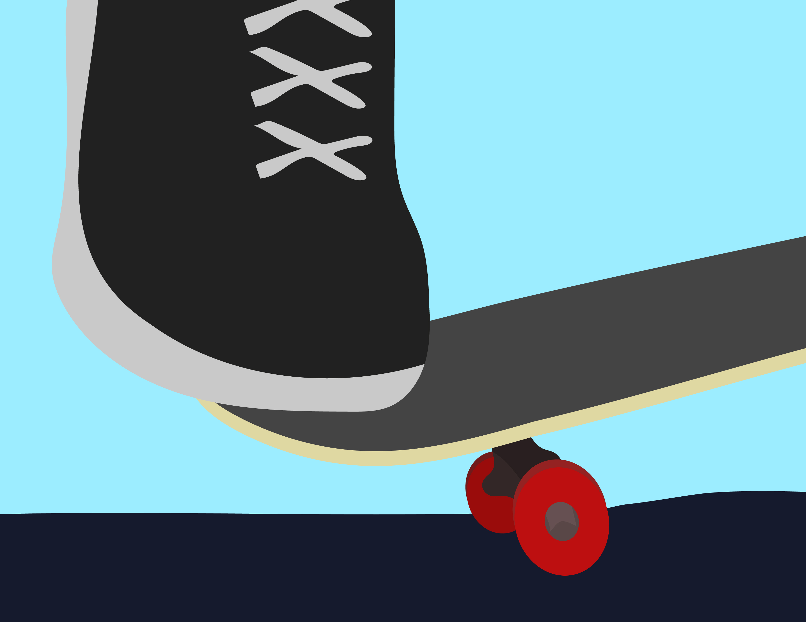
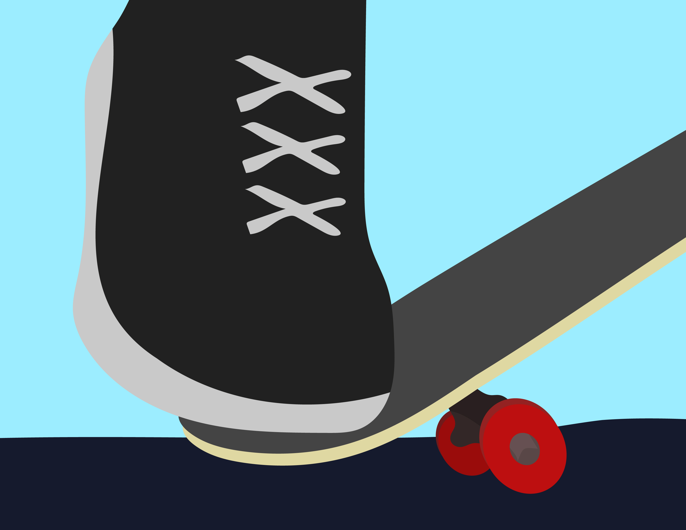

STEP 3
Popping the Tail
Now comes the most important part of the ollie: popping the tail. To do this, press down hard on the tail of the board with your back foot. You’re aiming to hit the ground with the tail quickly and with enough force to lift the front of the board into the air. The key here is to snap the tail down as you jump.


If you don’t press hard enough, the board won’t leave the ground, so focus on really pushing down with your back foot while keeping your front foot in place. This timing takes practice, but once you get it, the rest of the ollie will feel more natural.